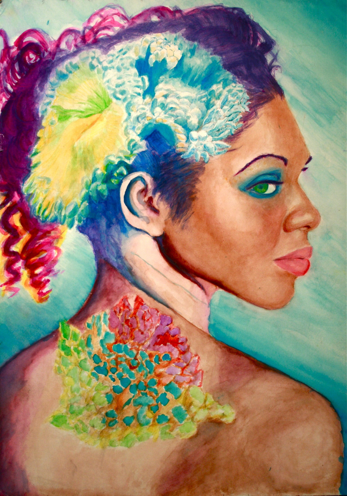

My Experience Making Art

About Me
Hello!
While I enjoy coding, there's another interest of mine: art.
This is something I did mostly in early childhood to high school. However, I'll still occasionally doodle from time to time.
All of the art featured on this website was created by me and more can be found here.
How To Get Started In Art
General quick steps for getting started in learning how to draw include:
- Deciding on a subject to draw.
i.e. pet, relative, friend, Pinhead, landscape, everyday objects
- Deciding whether to reference real life, photograph, or another artwork.
Referencing real life, whether something inanimate (still life) or a model is the hardest way to reference a subject. This is because real life moves a lot. For example, shadows on the subject move throughout the day, the elements can affect it, or the model might fidget. It is also a very good skill to develop because you learn how to take something 3-dimensional and convert it to a 2-dimensional image. Creating the illusion of a 3-dimensional object on a 2-dimensional surface involves learning how to use shading to mimic things like lighting and textures, and paying attention to proportions in the context of a particular perspective.
A photograph is the easiest way to reference the subject and is a method used by many graphic novelists, like Junji Ito, a manga artist who specializes in horror. Over time the eye learns to estimate body proportions better. You can also use grids if you'd like. But, you won't need to go as far as using mathematical formulas like A = πr2 to calculate the shaded area of a sphere. Or, use points (x1, y1) and (x2, y2) to calculate the slope of an arm pose. You won't need to measure any of that. Only do that if you really want to.
- Deciding on a medium to use.
The medium is what you're using to create an art piece with. Examples are pencils, markers, paper, metal, ceramics. The possibilities are really endless. For example, a controversial piece in 1917 was called "Fountain" by Marcel Duchamp. It's medium was literally a urinal with the artist's signature written on it.
- Practice often
In the context of figure drawing at least the more you make art, the better you get at making art. As I mentioned earlier you start to notice shadows and lighting better. How to draw proportions get betters. How much pressure to apply to your pencil during sketches becomes more intuitive. Mixing paints to get the right color is more obvious.
Reading about how others came up with their technique, like the book Drawing On The Right Side of The Brain, is also useful. Videos of artist's painting like Bob Ross are even better.
When I initally started drawing as a kid, I remember trying to draw a doll. By the time I was done, it looked more like actor Will Ferrell than the original doll I referenced, and I felt disheartened. I kept drawing anyways and eventually won awards in a high school art competitions like Scholastics and Young Talent.

Left to right: Winning 3rd place at Young Talent, Self-portrait
My Hobby
I've been making art since I can remember. I was introduced to it by my parents at a very young and also went to a middle school and high school that emphasized learning about art.
High school in particular was a busy time for me and I'll be talking mostly about that in this website. This is when I enrolled in AP Studio Art classes, and for the first time really felt pressure related to producing work. AP Studio art courses require 24 pieces of work finished by the end of the school year. A panel of judges rate each piece. A grade from 1-5 is given, with 5 being the highest.
To keep things short, I'll say that when I cared about producing art for the judges, I made a 3 each time for the whole class. I felt so frustrated by this that during the last year of highschool I decided not to care what the judges thought and just create art I enjoyed. Ironically, that was the one year I made a 5 in the class.
AP Studio Art
I took AP Studio art every year with a different focus: Drawing (took twice for fun), 2D Art, and Ceramics
Traditional Art
Drawing
Portrait done on watercolor paper with black ink and watercolor pigment.
This area is more about the classical idea of traditional art and is mostly exclusive to using mediums that require drawing with the hands:
- Pencil
- Ink
- Charcoal
- Pastel
- Watercolors
Digital art, collages and other non-traditional drawing mediums would not really apply here.
2-D Art
Skulls drawn on matte paper.
This concentration focuses on any 2D art subject. There is a lot more freedom in the mediums you can use. While traditional painting is allowed other art forms also allowed are:
- Photography
- Digital art
- Weaving
- Fabric Design
- Printmaking
Attention to the composition of the portfolio is judged.
How did you arrange the subject in your piece? Is it in the center, or off to the side in an interesting way? What colors did you use? Are any combinations of colors complementary? What was the reason for using these colors? For example, you decided to personify Spring and Winter and used warm colors for Spring and cool color for winter. Is there a lot of empty space in your piece, and does this seem deliberate to emphasize the subject or accidental? These are questions related to composition.


3-D Art
I think this one is pretty straightforward. This concentration focuses on 3-dimensional mediums such as:
- Ceramics
- 3-D Fabric Arts
- Metal Work
- Architectural Models
© 2025 Real Fake Copyright. All rights reserved.